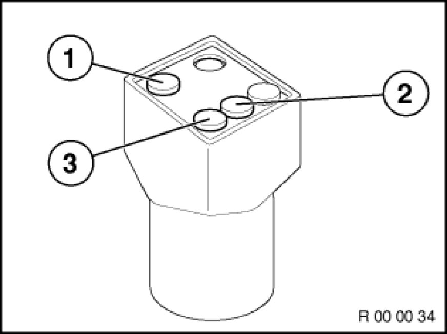
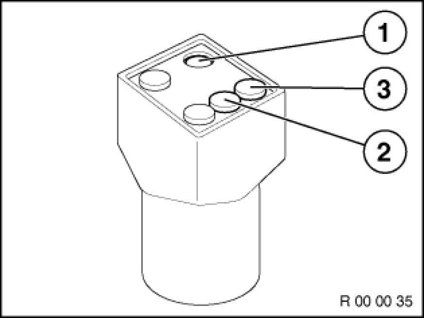

With Tester
00 00 ... - Resetting service interval indicator according to factory specifications

Special tools required:
- 61 1 110

For vehicles with diagnosis socket in engine compartment:
Necessary preliminary tasks:
- Switch ignition on.
- Attach resetter (special tool 61 1 110) to diagnosis socket in engine compartment

Resetting engine oil service
Press yellow button (1) for engine oil service.
Green lamp (2) lights up.
Wait until yellow lamp (3) lights up and then goes out again.
Check that oil service indicator has been reset.

Reset service
Press red button (1) for inspection.
Green lamp (2) lights up.
Wait until red lamp (3) lights up and then goes out again.
Turn off ignition, wait 20 seconds and repeat procedure in order to adapt interval of annual inspection to inspection.
Check that service interval indicator has been reset.
For vehicles without diagnosis socket in engine compartment:
For vehicles which do not have a diagnosis socket in the engine compartment, the service interval indicator is reset via the instrument cluster or the Diagnosis and Information System (DIS).
For details of the exact procedure, please refer to the Owner's Handbook for the vehicle in question or the Diagnosis and Information System (DIS).